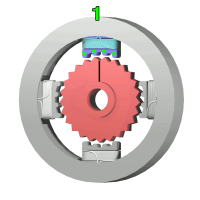
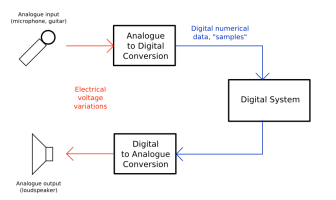

Introduction
IoT Introduction
Microcontrollers and Raspberry Pi
Project and WIT-CMU Collaboration
Sensors & Data Conversion
Sensors Introduction
Data Conversion
Actuators
Actuators
Data Conversion Lab
Overview and Serial Comms
Serial Bus Comms
Thermistor and BME680 Temperature and Humidity Sensor
Actuators
Dr Frank Walsh (WIT) & Dr Kumar Yelamarthi (CMU)
Actuators

Data Conversion Lab
